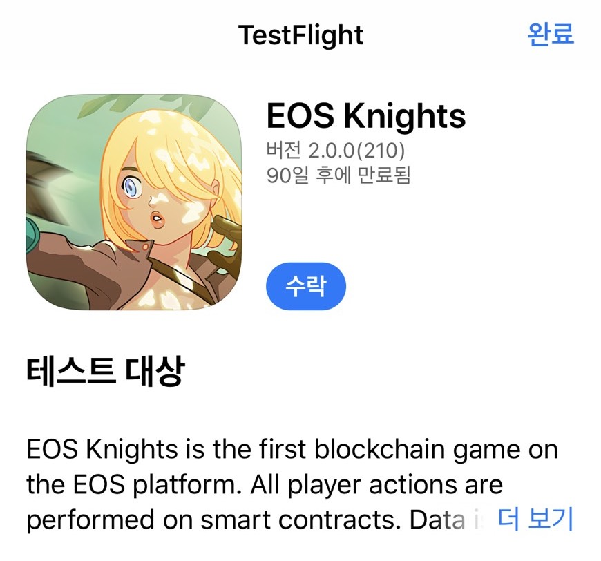
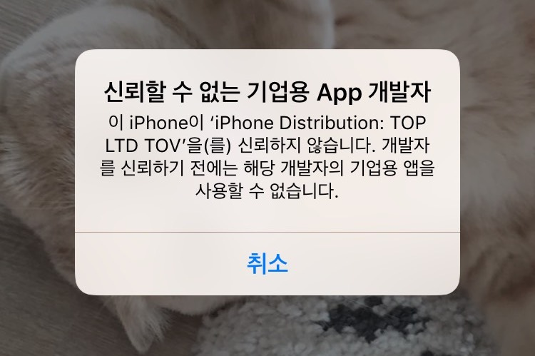
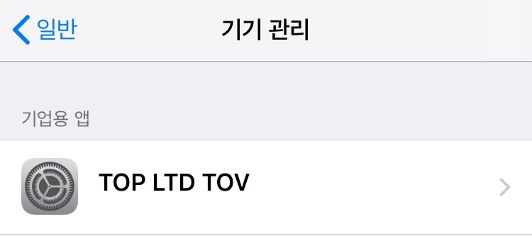
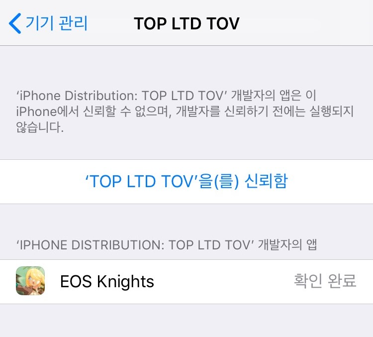

iOS 버전 설치
아이폰에서도 EOS Knights와 함께해요!
방법1. 테스트 플라이트로 설치
설치 방법
- 기존 엔터프라이즈 빌드가 있다면 지웁니다.
- Donwload 버튼 눌러 가이드에 따라 테스트 플라이트 앱을 설치합니다.
- 테스트 플라이트 앱 설치후 목록에서 EOS Knights를 확인할 수 있습니다.
- 수락 후 앱을 설치합니다.

방법2. 엔터프라이즈로 설치
테스트 플라이트로 설치가 어려우실때 이 방법을 사용하세요.
가능하면 테스트 플라이트로 설치를 추천드립니다.
Download
1. 이오스 나이츠를 처음 실행할때 아래 안내창이 표시됩니다.

2. 이 창을 닫은 후, EOS Knights를 신뢰해야 합니다. 설정 > 일반 > 기기관리 으로 들어갑니다.

3. 'TOP LTD TOV'을(를) 신뢰함 을 탭합니다.
